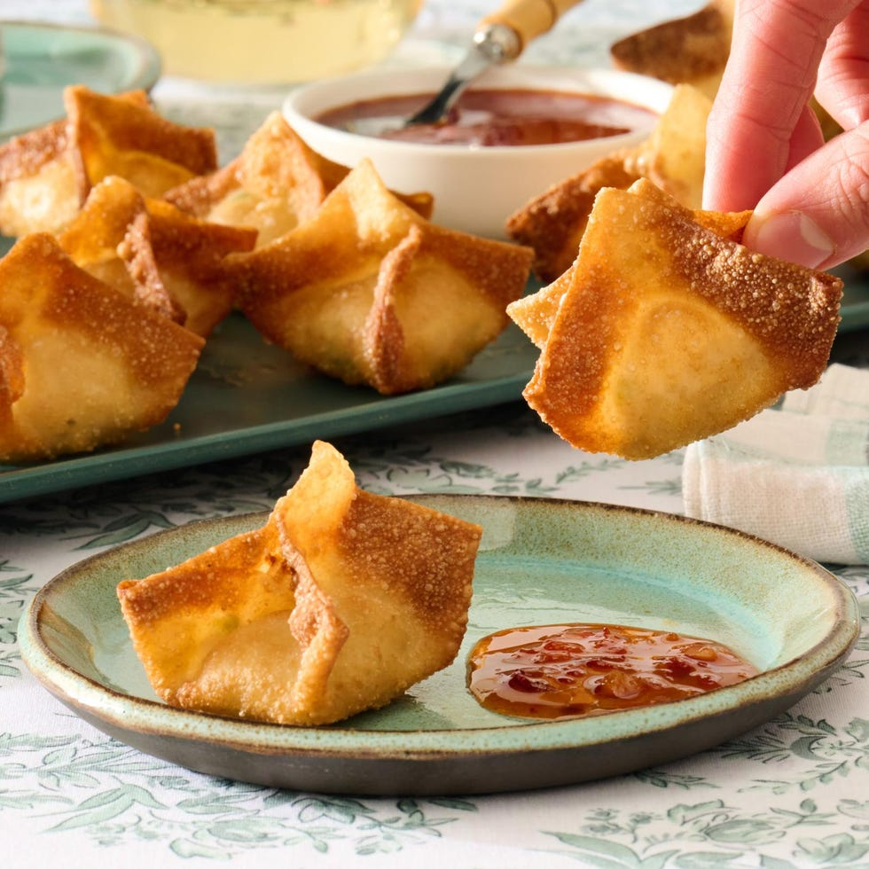

Fry or air fry this crispy takeout favorite at home! Golden, creamy, and perfectly crunchy.

By: Leah PerezPublished: May 23, 2024Yields: 3 dozenPrep Time: 45 minsTotal Time: 55 mins
Ingredients
1 (8 oz) package cream cheese, at room temperature
4 oz imitation crab meat, finely shredded and patted dry
2 tsp soy sauce
1 tsp Worcestershire sauce
½ tsp ground black pepper
3 green onions, thinly sliced
2 garlic cloves, grated
1 jalapeño, seeded and finely chopped (optional)
1 (12 oz) package square wonton wrappers
1 large egg, lightly beaten
Vegetable oil, for pan frying or air frying
Cooking spray (for air frying)
Sweet chili sauce, for serving
Directions
Make the filling: In a large bowl, mix cream cheese, crab, soy sauce, Worcestershire sauce, black pepper, green onion, garlic, and jalapeño until well combined.
Assemble the rangoons: Working with one wonton wrapper at a time, place 2 teaspoons of filling in the center. Brush edges with egg and fold corners together to form a four-pointed star. Press edges to seal and remove air. Keep unused wrappers covered with plastic wrap.
Pan Fry: Preheat oven to 250°F. Heat 1½ inches of vegetable oil in a large Dutch oven to 350°F. Fry rangoons in batches (6–7 at a time), turning until golden brown (1–2 mins). Transfer to a wire rack over a baking sheet to keep warm.
Air Fry: Preheat air fryer to 350°F. Spray basket with cooking spray. Lightly brush rangoons with vegetable oil. Cook in single layer for 5 mins, brush again if dry, and cook 3 mins more until golden and crispy.
Serve: Serve hot with sweet chili sauce for dipping.
Tip: For an easier fold, simply fold the wonton wrapper in half into a triangle and seal the edges.